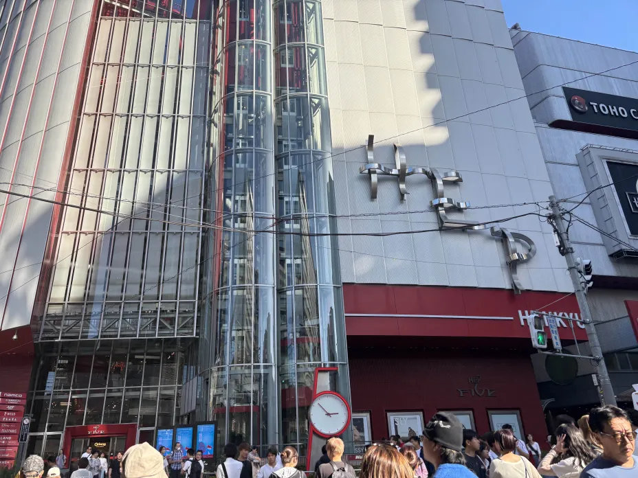
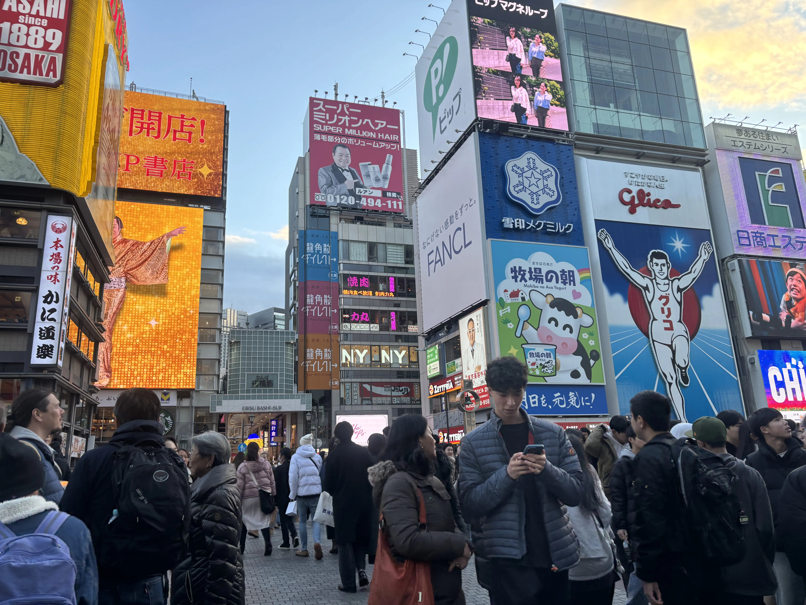
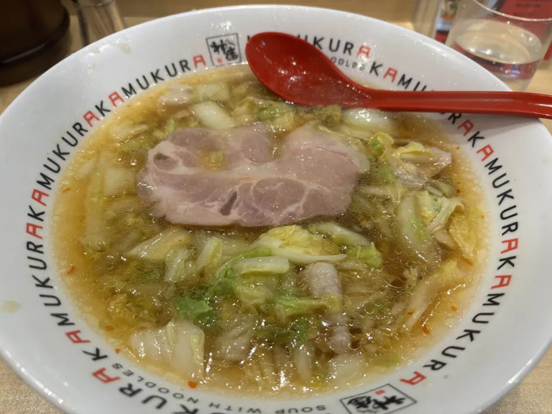
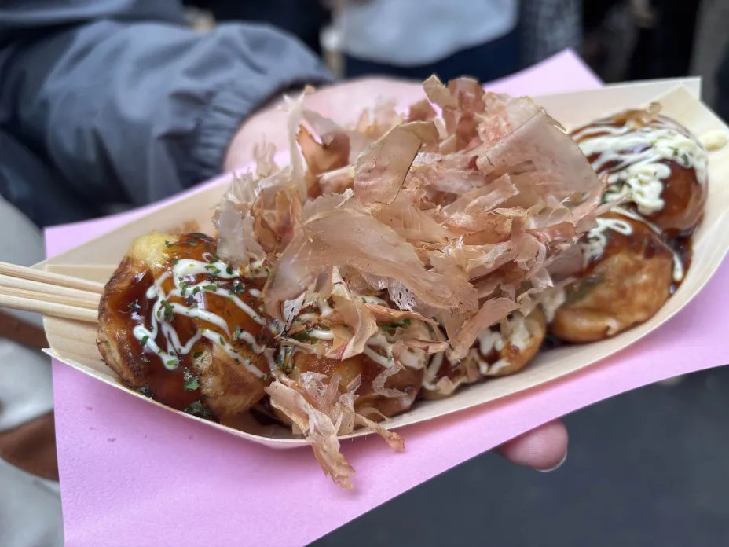
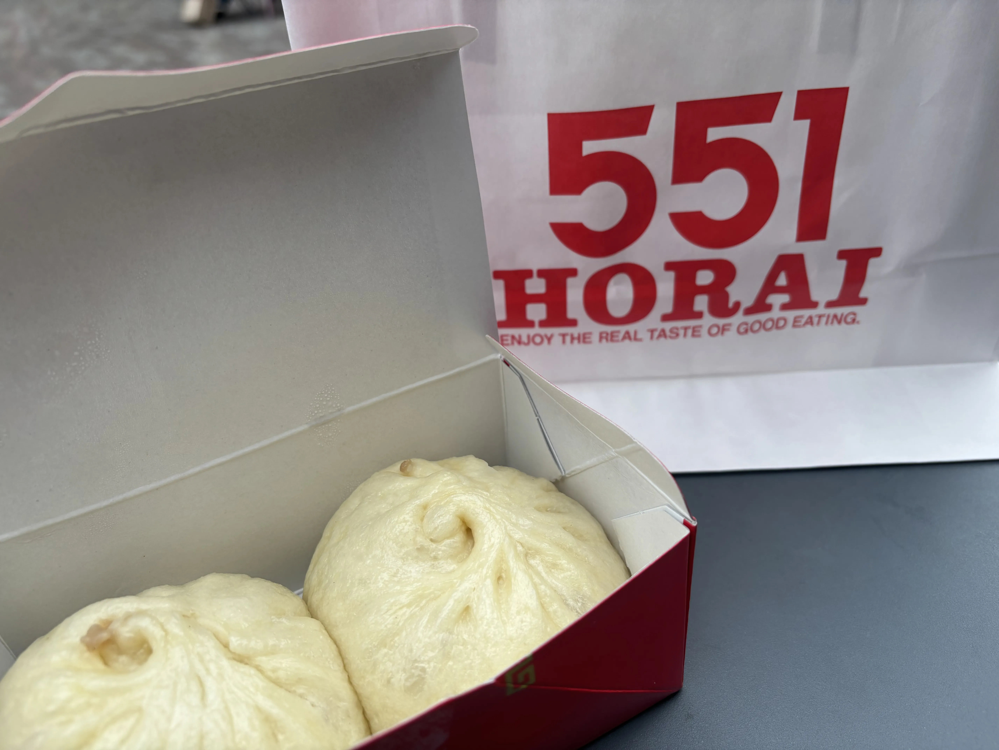
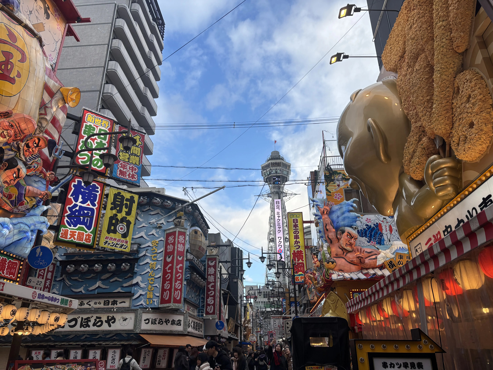
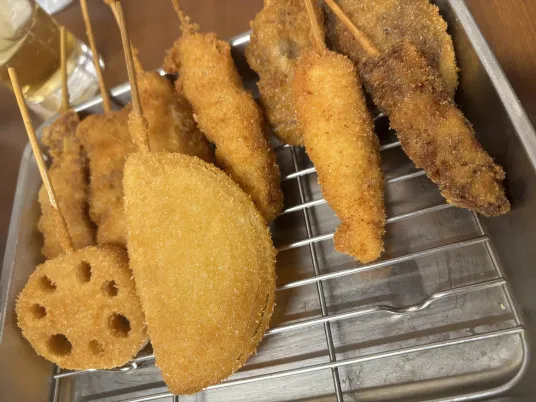

梅田周辺
HEP FIVE

open ショッピング
11:00 ～ 21:00
その他
11:00 ～ 23:00
梅田駅の近くにある
大きなショッピングモール
人が多すぎて写真取れなかったけど
赤い観覧車が目印の建物！
レディース服を中心に
流行りの服のお店が大量！
買い物楽しすぎて破産しそう
難波周辺
道頓堀グリコサイン

一番大阪らしい場所(だと勝手に思ってる)
めちゃめちゃ人がいるしガッツリ橋の上だから思ってるより普通に町中
結構溶け込んでて初見あ、ここか！？ってなった
どうとんぼり神座

open 10:00～翌8:00
おいしいラーメン
750～870円
(店舗による)
スープがしっかりしみ込んだ
野菜最強！！！
こういう野菜ほんと好き
くどすぎないのに
満足感があってバランス神
トッピングもいろいろあった
お腹に余裕があったら食べたい…
たこ焼道楽 わなか

open 平日 10:30～21:00
土日祝 9:30～21:00
たこ焼 8個入
600円
外はかりっかりなのに中はふわとろ
気づいたらなくなっててびっくり
何個でもパクパク食べられちゃう
めっちゃ熱いからやけど注意
12個入り友達と食べた時(写真は8個)
好きなだけ食べなって言われて
9個食べたらしい
551HORAI

open 売店 10:00～21:30
第１・３火曜定休
豚饅 2個入
480円
551があるとき～！
お店は無限にあるけど
意外と食べたことなかった
あっちこっちにあっても
絶対アホみたいに並んでる
中身ぎっしりでさすがっす
ちょっと甘い皮と
中身の相性が最高なんだよな
通天閣周辺
通天閣

なんかこう…視覚からの情報量が多い…
このがやがや感がなかなかテンション上がる
商店街は結構昔ながらのお店が多そう
射的とか弓道場的なのがあったりして
年中お祭り気分が味わえる
串カツ

いろんなお店がありすぎてよくわからん…
ってなってたところににーちゃんが連れてってくれた
店名は覚えてないけどあたりだった嬉しい
めっちゃおいしかった！
こういう揚げ物がいっちゃんおいしいんよな
お野菜もおいしいけどやっぱ牛肉っておいしい…
お酒飲めたらもっと楽しいんだろうな～と思ったり